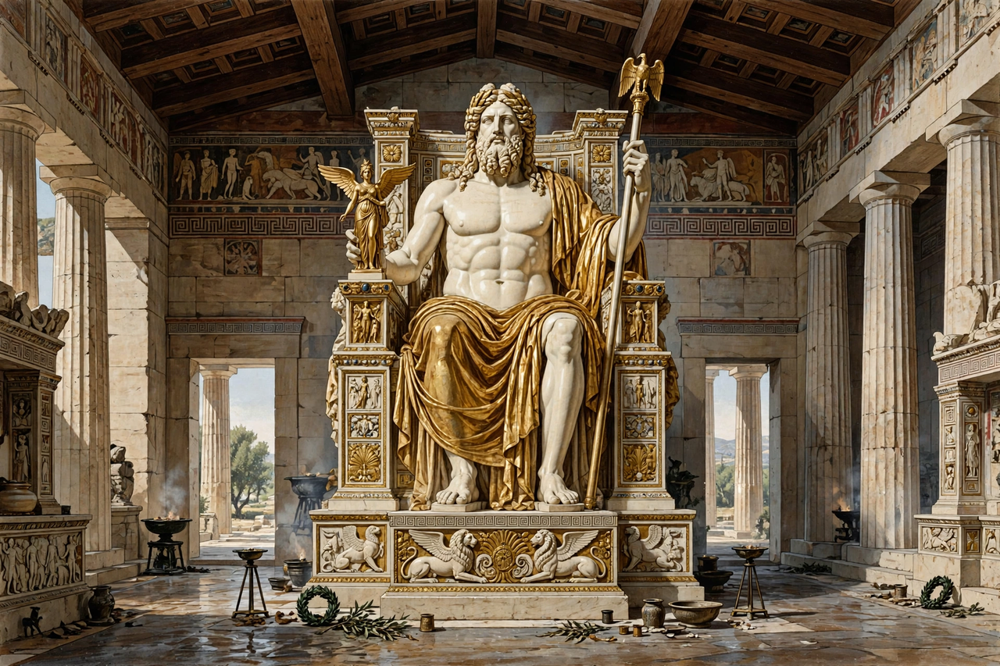

Statue of Zeus at Olympia
From Wikipedia, the free encyclopedia

The Statue of Zeus at Olympia was a giant seated figure of the god Zeus, about 12.4 metres (41 feet) tall, made by the Greek sculptor Phidias around 435 BC at the sanctuary of Olympia, Greece. A wonder of ivory and gold over a wooden framework, it was one of the Seven Wonders of the Ancient World, so famous that the Roman general Aemilius Paullus reportedly felt he had seen the god in person; it was later moved to Constantinople, where it is believed to have perished by fire in the fifth or sixth century AD.
The statue
Phidias — fresh from the Parthenon's Athena Parthenos — built Zeus in a workshop (excavated at Olympia, his cup found there inscribed 'I belong to Phidias') exactly the temple's size: the god enthroned, holding Nike in his right hand and a sceptre with an eagle in his left, his flesh ivory, his robes gold hammered over carved cores, the throne inlaid with ebony, gems and painted panels. Strabo joked that if Zeus stood, he would take the roof off.
Fame and loss
For eight centuries the statue presided over the Olympic Games; emperors coveted it (Caligula ordered its head replaced with his own — the order lapsed). After Theodosius banned the games (393), the statue was reportedly transported to a palace in Constantinople and destroyed in the Lauseion fire (475) or a later blaze — the sources are thin, and its fate is reconstruction from admiration.